(2007-10-24 21:53:45)
刚回来，下午的事情还没什么，【韶山映山红】“下午的事情还没什么”，指的是当天收盘写前一篇博客说的“马上要去见香港来的一群无聊人”。缠师在操作一个收购项目。在后续原文还有多次提到。★可以做个专题，以后研究。】晚上有一个电话，让本ID真有点气愤了，不吐不快。
因为要剪彩，主办方想请某德高望重的人，这老人和本ID不是一路子的，【韶山映山红】“不是一路子的”，可能是地方上提拔起来的干部，也可能是有待遇、已经无实职的老资格。】本ID找人去请，得到的答复竟然是：
1、加上夫人和秘书的来回机票。（废话，这还用说，这是肯定的，就告诉来几个人，要不要明说呀。）【韶山映山红】有专职秘书，没有提保健医生，待遇级别应该在正省部级之下。】
2、劳务费N元。（这是让本ID最气愤的，气愤在于，这个N的数字太小，和这人的身份一点不配合，而且吃惊的是，这德高望重的、人人都知道的人，竟然提这个？而且提的数目一点气派都没有，连第N流的歌星都赶不上。）【韶山映山红】可能是有待遇、无实职、退居二线比较早的老资格，来钱的路子、机会并不多，所以达不到缠师眼里的资费水平。】
本ID很气愤地回答说：
1、机票就不用说了，到时候还安排他们住当地最好的宾馆的总统套房，这总可以了吧？
2、劳务费不知道怎么给，主要这东西，本ID都没法开口。本ID以个人名义给也不合适，因为这人现在还有高职务，本ID可不想沾行贿的破事。而且最重要的，这样一个数量，本ID都没法转告别人，这样说出去，不是丢他的脸吗？
3、如果一定这样，那本ID只好告诉主办方，这人没空。这样是为这人好，保存他的名节。
中国古人，都重一个名节。现在，名节成了什么了？可悲呀，我的中国。
不想说这破事了，刚才发现，有一个课程86，竟然写好了，本ID都不知道什么时候写的，也不知道是否帖过，请各位鉴别一下，本ID这段时间是忙晕了，如果已经贴过的课程，请原谅了。
【韶山映山红】以上原文红色字体。神燕问，为什么不八卦一下这个人是谁。俺说，缠师眼里“德高望重的、人人都知道的人”，扒出来晒，活腻了么？】
一根筋思维的心理基础，就是企图找到一个永恒固定的公式，然后不管任何情况，只要套进去，就有一个现成答案。
这种思维，把世界看成一个精密的机械，任何的运行，都等价于起点-结果模式，只要起点相同，就有相同的结果。这就是典型的一根筋思维。【韶山映山红】小转大和小级别延伸破坏大级别背驰，专治各种不服。这里说的“起点-结果”，不是因果。】
有些人，学本ID的理论，本质上就是希望找到这样的东西，却不知道，法成则人成，人不成，法何成？【韶山映山红】达摩祖师《悟性论》：若解时，法逐人；若不解时，人逐法。若法逐于人，则非法成法；若人逐于法，则法成非法。若人逐于法，则法皆妄；若法逐于人，则法皆真。是以圣人亦不将心求法，亦不将法求心，亦不将心求心，亦不将法求法。所以心不生法，法不生心，心法两寂，故常为在定。众生心生，则佛法灭；众生心灭，则佛法生。心生则真法灭，心灭则真法生。知一切法各各不相属，是名得道人。知心不属一切法，此人常在道场。】
一个很简单的实验，同一批人，同样的资金，同样的股本、同时开始股票运行的实验，显然，这个实验是不可重复的。【韶山映山红】无法证明，也无法证伪。】
因为，股票走势，归根结底，是参与者心理合力的痕迹，而心理，是不可重复的。否则，请问，有谁能百分百复制自己9月30日开盘那四小时的心理曲线？这都是一次性的，不可复制。【韶山映山红】2007年9月30日是周日，2006年9月30日是周六。此处应该是笔误，可能说的是530行情的2007年5月30日，因突然上调股票交易印花税，导致股市连续六天大跌，从4200点跌倒3410点，股市一片狼藉。】
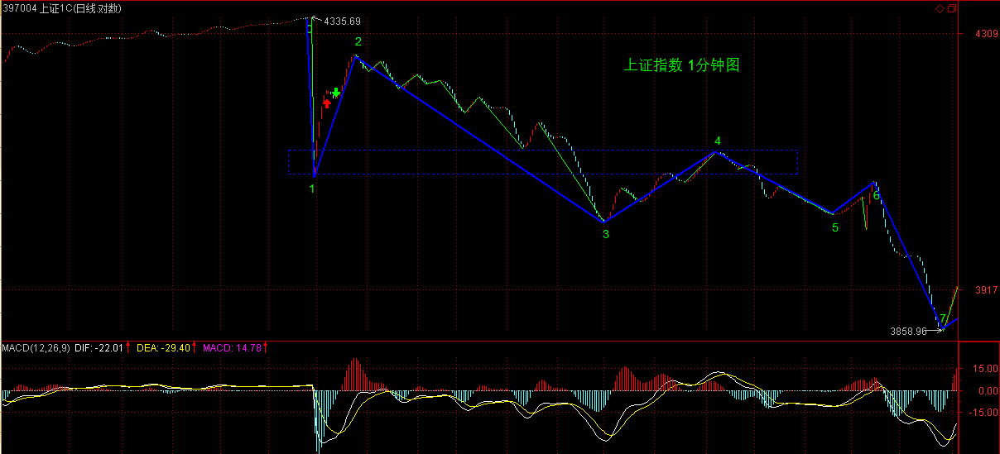
而几千万、上亿人的交易的可复制性，就更没可能了。为什么？每天都是新世界，影响市场的因素，每天都在变化着，而这些因素对市场参与者的心理影响，更是模糊、混沌，由此产生的走势，很显然不具有任何百分百复制的可能性。【韶山映山红】这里是原文唯一针对股市使用“混沌”这个词。】
因此，从最开始的时候，就必须要有一个大的眼界，如果看1分钟就被锁在1分钟层面里，那搞100年都进步不了。【韶山映山红】多级别联动。多因素联动。】
一个很简单的例子，也是最基础的一步，就是必须动态地把握各种概念。【韶山映山红】自相似性构成的分类，表面上的相同，因果各不相同，所以要“动态地把握各种概念”，而不是生搬硬套。】
例如，第三类卖点，这在不同的情况下，其操作意义显然是不同的。【韶山映山红】同样的形态，在不同的背景下，表达不同的走势，不同的应对。同病不同医。】
不妨以此为例子，仔细分析一下：【韶山映山红】以第三类卖点在不同情况下的不同操作意义为例子。】
一、在一个大级别的中枢上移中，【韶山映山红】“中枢上移中”，意味着当下大级别处于前一个中枢三买不背驰向上之后、到形成新中枢之前的走势。】一个小级别的第三类卖点，唯一注意的，就是这个卖点扩展出来的走势，是否会改变大级别中枢上移本身，这里，根据大级别的走势，不难发现其界限。【韶山映山红】“界限”就是“是否会改变大级别中枢上移本身”。中枢上移的结束有三种情况：１，小转大引起次级别向下走势，跌回向上走势的最后一个中枢，破坏了大级别向上走势的结构。２，小转大引起次级别向下走势，新的次级别向下走势升级为本级别向下走势，演化成本级别转折。３，小级别中枢在三卖之后不断向下扩张升级，一直到形成更大级别中枢震荡。】因此，这种第三类卖点的操作意义，就不大，关键是警戒的意义。【韶山映山红】“大级别的中枢上移中”，意味着没有大级别的背驰，小级别的三卖扩展出来的走势，如果“改变大级别中枢上移本身”，就意味着小级别背驰引起了大级别转折，或者小级别扩张升级衍生大级别扩张升级。而小级别三卖的时候还不能鉴别会有这样的未来，没有相应的操作，所以“关键是警戒的意义”。】如果是短线的短差，那也是小级别的中枢震荡中来回操作，因此这第三类卖点也只是构成一个震荡意义的操作点。【韶山映山红】“在一个大级别的中枢上移中”利用小级别的买卖点做“短线的短差”，小级别的中枢底部做回补操作，遇到小级别三卖就不再回补，所以说是“震荡意义的操作点”。】
【韶山映山红】总结：大级别上涨趋势中的小级别三卖，警戒，看扩展出来的走势是否会改变大级别中枢上移本身。】
二、在一个大级别的中枢下移中，【韶山映山红】“中枢下移中”，意味着当下处于前一个中枢三卖不背驰向下之后、到形成新中枢之前的走势。】这样，一个小级别的第三类卖点，其意义就是这卖点是否让大级别中枢的下移继续，【韶山映山红】什么情况下，“一个小级别的第三类卖点”会影响“大级别中枢的下移继续”呢？三卖之后中枢扩张升级成大级别中枢。也是只有“警戒的意义”。】如果继续，那就意味着这里没有任何的操作价值（当然，如果有卖空的，那是另算了）。【韶山映山红】小级别的卖空操作，回升中枢的时候可能会平仓，所以三卖就可以继续开仓卖空。】这类第三类卖点的操作意义，基本没有，如果说卖，大级别都中枢下移了，好的卖点估计都过去了N的N次方个了，也就是说市场已经给你N的N次方卖的机会，你还没改正，那你大概更适合去卖豆腐了。【韶山映山红】如果没有让大级别中枢的下移继续，意味着小级别三卖之后小级别背驰引起了大级别转折，或者小级别扩张升级衍生大级别扩张升级。这时候小级别的背驰只有理论上的意义，因为无法当下的判断。】
【韶山映山红】总结：大级别下跌趋势中的小级别三卖，观察是否有小级别背驰，注意背驰后的演化。】
三、在一个大级别的中枢震荡中，这样，一个小级别的第三类卖点，其意义就看这是否延伸出大级别的第三类卖点，【韶山映山红】小级别的三卖怎样延伸出大级别的三卖？★这样的小级别三卖，应该在大级别三卖的返回段之前，也就是说，大级别三卖的返回是小级别三卖之后的背驰带来的转折。】如果没有这种危险，本质上不构成大的操作机会，只是一个短线震荡机会。【韶山映山红】小级别的三卖如果没有延伸出大级别的三卖，那就会是小级别趋势的延伸、小级别背驰之后的转折、小级别背驰之后的震荡，都是小级别的，所以“本质上不构成大的操作机会，只是一个短线震荡机会。”】而且，很有可能，一个小级别的第三类卖点后，反而延伸出大级别的买点，这在震荡中太常见了。【韶山映山红】小级别的三卖之后的背驰，满足区间套的要求，就会是大级别的买点。】
第三最后说的这种情况，就是多空通杀中经常用到的一种技巧。【韶山映山红】大级别的中枢震荡中利用小级别的三卖让多头卖出，杀多，然后再三卖转二买，小级别转折去杀空。】
通杀，就是要把所有人的舞步搞乱。怎么搞乱？就是买点卖点轮番转折，而且模式不断变化，让不同的操作模式都被破裂一次。【韶山映山红】“不同的操作模式”都是什么？怎么样“破裂”？★以后研究。】
而这种舞步错乱的本质，就是要触及不同的突破、止蚀位置，让止蚀的刚卖出的又回头；刚买入追突破的马上给一巴掌。【韶山映山红】具体什么情况？★以后研究。】三卖转二买，三买转二卖。】二买低于一买，二卖高于一卖。】
【韶山映山红】多空通杀的目的都有哪些？★★以后研究。】
本ID理论，从来没有任何止蚀之类的无聊概念。有什么可止的？三大卖点，给三次机会，加上不同级别的，机会N多，你都没反应，等到缺胳膊少腿才去止蚀，那是有病，回火星去吧。【韶山映山红】所谓“止蚀”，其实就是按照自己的盈亏进出，脱离了走势。完全分类，包括应对不同情况的买卖点，就可以按照规则进出。】
而只要把握了本ID的理论，那么第三那种情况，正好适合去凌波微步一番。
【韶山映山红】凌波微步，出于曹子建《洛神赋》：“体迅飞凫，飘忽若神，凌波微步，罗袜生尘。动无常则，若危若安。进止难期，若往若还。转眄流精，光润玉颜。含辞未吐，气若幽兰。华容婀娜，令我忘餐。”原意是形容洛神体态轻盈，浮动于水波之上，缓缓行走。】
【韶山映山红】金庸《天龙八部》逍遥派的独门轻功步法，以易经八八六十四卦为基础，使用者按特定顺序踏着卦象方位行进，从第一步到最后一步正好行走一个大圈。此步法精妙异常，习者可以用来躲避众多敌人的进攻，此外凌波微步每踏出一步，都与内力息息相关，决非单是迈步行走而已，若无内功根基之人，将凌波微步强行走将起来，会造成自绝经脉的危境。】
【韶山映山红】帛卷尽处题着凌波微步四字，其后绘的是无数足印，注明“归妹”、“无妄”等等字样，尽是易经中的方位。段誉前几日还正全心全意的钻研易经，一见到这些名称，登时精神大振，便似遇到故交良友一般。只见足印密密麻麻，不知有几千百个，自一个足印至另一个足印均有绿线贯串，线上绘有箭头，料是一套繁复的步法。最后写着一行字道：“猝遇强敌，以此保身，更积内力，再取敌命。” 这“凌波微步”乃是一门极上乘的武功，所以列于卷轴之末，原是要待人练成“北冥神功”，吸人内力，自身内力已颇为深厚之后再练。“凌波微步”每一步踏出，全身行动与内力息息相关，决非单是迈步行走而已。 这“凌波微步”是以动功修习内功，脚步踏遍六十四卦一个周天，内息自然而然的也转了一个周天。因此他每走一遍，内力便有一分进益。】
这里，还可以更精确地分析一把。
根据先后已经买卖点的级别，无非以下几种情况。
1、大买点后小买点
这种情况，后面的小卖点，【韶山映山红】笔误。后面的小买点。】往往构成相对于大买点的第二次介入机会，【韶山映山红】大级别区间套买点之后，小级别的回踩走势，往往成为一种确认动作，可以借机搭车。】但不一定是最精确的机会。因为最精确的机会，一定是符合区间套的，【韶山映山红】精确，没有偏移。】而并不是任何的小级别买点，都必然在大级别买点对应的区间套中。【韶山映山红】在小级别背驰段，不在大级别背驰段。】也就是说，这种小级别买点，往往会被小级别的波动所跌破，但这种破坏，只要不破坏前面大级别买点所有构造的大级别结构，那就一定会有新的小级别波动，重新回到该买点之上。【韶山映山红】大买点经过区间套确认后，开始下一个走势，这个小买点就是新走势里的小级别买卖点。开始一段新走势以后，小级别的买卖点没有操作意义，但是需要作为观察点，考察是否会“破坏前面大级别买点所有构造的大级别结构”。】
大买点后，必然产生相应级别的结构，因为后面的小买点，不过是构造这大结构中的小支架，明白这个道理，相应的操作就很简单了。【韶山映山红】大级别买点都保证次级别的一段走势，趋势背驰保证次级别的三段走势，这就是“相应级别的结构”。】
2、大卖点后小卖点
和上面那种情况反过来就是。
3、大买点后小卖点
如果两点间有一个大卖点，那么，就可以归到第2种情况去。【韶山映山红】大买点后小卖点，如果大买点和小卖点这两点间有一个大卖点，那么，就是大买点+大卖点+小卖点，可以归到第2种情况“大卖点后小卖点”的分类里面去。】
如果没有，那么这个小卖点后，将有一个小级别的走势去再次考验或者确认这个大买点后形成的大级别结构，【韶山映山红】大买点之后首先是小级别向上转折，出现小卖点的时候，小级别向上走势结束，小级别向下回踩，考验或者确认大买点之后，原来的下跌能量是否得到了充分的释放，这是考察是否有大级别向上走势的重要依据。】只要这个走势不破坏该结构，接着形成的小买点，【韶山映山红】形成小买点的时候，小级别的向下走势不破坏大买点之后的大级别向上的结构。】往往有着大能量，为什么？【韶山映山红】大买点之后紧跟着的小买点往往有着大能量。因为是对大买点的一种确认。】因为大结构本身的能量将起着重要的力量，【韶山映山红】大结构本身的能量将起着重要的作用，也只是重要的力量，而不是全部。】一个结构形成后，如果小级别的反过程没有制造出破坏，一种自然的结构延伸力将使得结构被延伸，这是一种重要的力量。【韶山映山红】如果小卖点延伸出来的走势破坏大级别结构，就是大级别背驰被小级别延伸所破坏。也就是说，大级别背驰引起的转折，只保证次级别的一段走势，然后需要等再下一次回踩来确认是第二类买卖点还是破坏结构。如果没有破坏结构，大级别背驰的力量就会延伸已经转折的小级别走势。】
【韶山映山红】这里说的“制造出破坏”是什么样的结构形态？小卖点之后的下跌，只有不新低或新低却盘整背驰的情况才是第二类买卖点，不满足这样要求的就可以判定“破坏”了，也就是说形成了次级别的非背驰下跌。】
4、大卖点后小买点
和上面反过来就是
5、大中枢中的小买卖点
在一个大中枢里，是没有大买卖点的，因为出现第三类卖买点，就意味着这中枢被破坏了。【韶山映山红】这里说的“大买卖点”是指中枢级别的买卖点。但是可能会有走势类型的第二类买卖点。】
这种大中枢中的小买卖点，只会制造中枢震荡。因此，这里买卖点通说，就是这类买卖点，一般不具有小级别的操作意义，这是最容易把多空搞乱的。
但是，其中有一种买卖点，往往具有大级别的操作意义，就是大级别中枢震荡中，次级别的买卖点。【韶山映山红】大级别中枢震荡中，次级别的买卖点，具有大级别的操作意义，就要降级操作。】
例如，一个5分钟的震荡里面的1分钟级别买卖点，就具有5分钟级别的操作意义。因为该买卖点后，无非两种情况：
1、就是继续5分钟中枢震荡；
2、刚好这次的次级别买卖点后的次级别走势构成对原中枢的离开后，回抽出第三类买卖点，这样，原来这个买卖点，就有点类第一类买卖点的样子，那第三类买卖点，就有点新走势的类第二类买卖点的样子了。（注意，这只是比喻，不是说这就是大级别的第一、二买卖点。）【韶山映山红】离开段的线段类走势的买卖点。】
【韶山映山红】中枢内二买。】
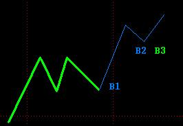
【韶山映山红】这一段说的不是次次级别震荡的买卖点，只是中枢震荡中次级别走势的背驰点。如果只做上涨不做震荡，这些买卖点都没有操作意义。但是他们可能成为抢跑点，在抢跑者的眼里，普通人的第三类买卖点已经是滞后的第二类买卖点了。】
注意，有些买卖点的意义是不大的。【韶山映山红】买卖点，有的具有大级别操作意义，有的就连本级别操作意义都没有。★可以做个专题，以后研究。】
例如，一个1分钟的下跌趋势，在第二个中枢以后，相对的中枢的第三类卖点，就没有什么操作意义了，为什么？前面第一个中枢的第三类卖点哪里去了？【韶山映山红】“第一个中枢的第三类卖点”就是最后的离开点。原因在于，向上走势的中枢出现三卖是顶部构造完成的标志。】
趋势，本质上就是中枢移动的延续，【韶山映山红】趋势和中枢移动是两个概念。什么是中枢移动？中枢第三类买卖点之后的再次离开，做背驰判断，不背驰的运动就是中枢移动。背驰呢？当然就是中枢震荡啦。后面原文也说中枢偏移。 】这种，第一个中枢的第三类买卖点，本质上就是最后一个合适的操作的机会，后面那些如果还需要操作，那是证明反应有大毛病了。
到第二个中枢以后，反而要去看是否这趋势要结束了，例如对上面1分钟下跌趋势的例子，【韶山映山红】“例如，一个1分钟的下跌趋势，在第二个中枢以后，相对的中枢的第三类卖点，”】跌了两个中枢以后，就要看是否有底背驰了，那时候想的是买点，不是卖点了。
而且，必须注意，对于趋势的转折来说，例如上面的1分钟下跌趋势，最后背驰转折后，【韶山映山红】这里没说是什么级别的什么类型的背驰。】第一个上去的线段卖点，很有可能刚好形成最后一个1分钟中枢的第三类卖点，【韶山映山红】“很有可能刚好”不是本级别背驰，而是小级别背驰的小转大，所以“第一个上去的线段卖点，很有可能刚好形成最后一个1分钟中枢的第三类卖点”。 另外，第三类买卖点都是同级别分解的结果，ｃ已经包含第三类卖点，内部背驰之后继续延伸，形成线段类下跌趋势，就还是次级别离开，其后的反弹，就是又一次构成第三类卖点。只有完成的走势，才有唯一的划分。】这时候，这个卖点，几乎没有任何的操作意义，反而是要考虑下来的那个第二类买点。很多抄底的人，经常在第一次冲起后就给震掉，然后再追高买回来，就是没搞清楚这种关系。
【韶山映山红】“最后背驰转折后，第一个上去的线段卖点，很有可能刚好形成最后一个1分钟中枢的第三类卖点，”这句话有点不符合常理，需要揣摩。趋势背驰的最后一个中枢是需要先出第三类卖点的，怎么“第一个上去的线段卖点”还能够“形成最后一个1分钟中枢的第三类卖点”呢？★以后研究。难道说，是三卖转二买的情况。】
如果你是抄一个1分钟级别的底，后面最坏有一个1分钟的盘整，连这盘整的格局都没有走势必完美，也就是最基本的三个线段都没形成就跑，不给震出来才怪了。
【韶山映山红】这里的前提假设是抄底的操作，趋势背驰的反弹“后面最坏有一个1分钟的盘整”。 29课说的是“第一类买点是绝对安全的，即使是这样一种最低级别的反弹，也有足够的空间让买入获利，而且，一般这种情况出现得特别少，很特殊的情况，但理论上，是要完全精确的，不能放过任何一种情况，如果不幸碰到这种情况，在资金利用率的要求下，当然是要找机会马上退出，否则就会浪费时间了。” 后面107课还说的是抢短线反弹，所以第一段就要出，然后二买再判断是否回补。】
当然，有一种稳妥的办法，给那些对大级别背驰判断没信心的，就是都在第二类买点介入，当然，实际操作中，你可以完全不管第二类买点形成中的背驰问题，反正第一类买点次级别上去后，次级别回跌，只要不破第一类买点的位置，就介入。【韶山映山红】其实，“背驰判断没信心的”，也不敢操作这个二买，除非是次级别操作。】
这样，只要后面的走势，在下一个次级别不破第一个次级别上去的高点，就坚决卖掉，【韶山映山红】三段反弹不能节节高，就退出。】如果破，就拿着，等待是否出现第三类买点，【韶山映山红】即使新高盘背也拿着，因为要形成中枢。】出现就继续拿着，不出现就卖掉。【韶山映山红】什么时候算是“不出现就卖掉”的情况呢？★中枢级别操作等三卖，次级别操作二卖出。】
按上面的程序，你甚至连背驰的概念都可以不管，所以，分清楚走势类型，其实就可以完美地操作了，其他概念，只是如虎添翼而已。【韶山映山红】实际的操作中，必须知道判断背驰。因为，至少需要知道次级别什么时候结束。除非是1分钟操作级别，线段的划分不需要背驰的概念。问题是线段操作要滞后一个线段，恐怕是左右挨扇啊。★以后研究。】
(2007-10-25 15:43:22)
请问，今晚的月亮圆吗？
今天最大的消息，就是关于强调宏观调控的，这是本ID最希望看到了。这点，本ID在“中国经济，已需治理整顿。 2007-10-15 08:32:52”中已经强调，很高兴今天看到回应。【韶山映山红】国务院总理温家宝24日主持召开国务院常务会议，研究部署第四季度经济社会发展工作。（二）继续抑制固定资产投资增长过快和信贷投放过多。严格执行土地利用计划，防止年底前违规批地用地。目前，新上项目增长较快，必须从严控制新开工项目，特别是高耗能、高排放和产能过剩行业的新开工项目。密切监测贷款投放进度和投向，引导商业银行控制规模、优化结构，对资本金不到位的新开工项目暂缓发放贷款。继续控制高耗能产品出口。】
经济大局，最终决定市场大局，今天的消息，对所有心里有所希望的人，都是一个很好的提醒。
技术上，昨天已经把可能的情况进行最严密的分析，就是看那1分钟中枢的第三类买卖点情况，
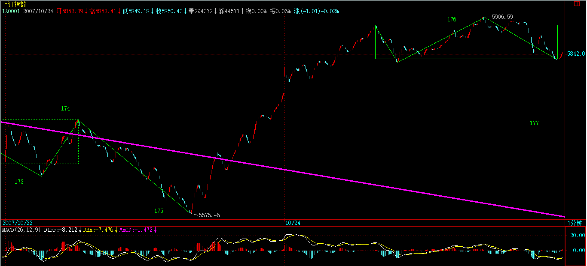
今天早上受消息影响低开后，第一小时的反抽刚好构成第三类卖点，这就是本ID理论规范下，短线最后的逃命线，【韶山映山红】这个三卖，是上下上中枢的三卖。同时还是二三卖重叠的形态，所以是逃命线。】
【韶山映山红】本来是一个上涨的abc盘背结构，形成中枢是正道，前一日的走势就很规矩。这一天的跳空低开属于线段间的非背下跌，反弹形成三卖映证了这个非背下跌。这种二三卖重叠的情况，实际上是直接形成了一个线段类下跌趋势的结构，所以直接判断为线段中枢级别的转折，必须撤离。】
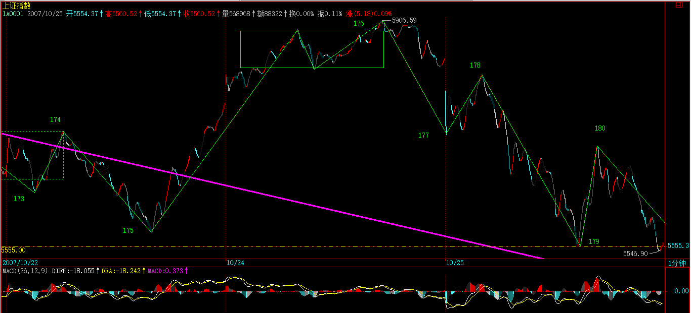
【韶山映山红】α+β同学提出来，如下图，这里177-178是一笔还是一段。按照现在的历史数据图，第一笔反弹不成笔，顶在底中了。】
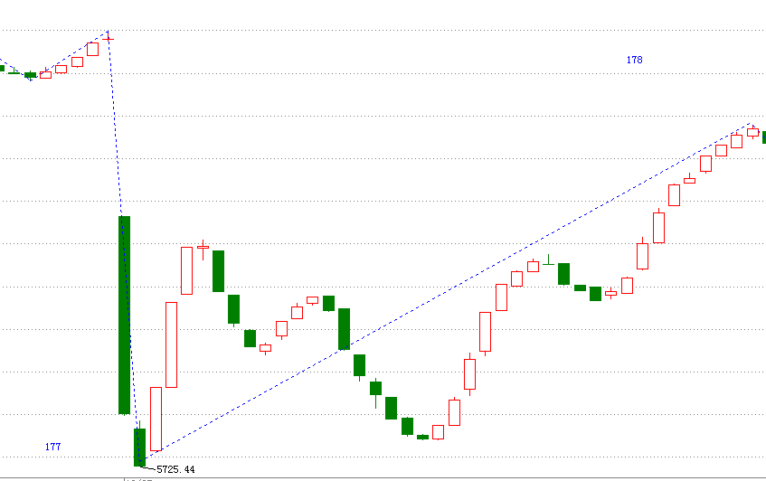
【韶山映山红】只不过，当时的K线，9:25的开盘竞价有一个单独的K线，查一下当天的分笔成交明细，9:30的开盘价低了，就不是顶在底中了。】
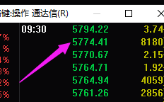
【韶山映山红】多一个K线，就不一样了。所以，很多细节没办法深究。】
【韶山映山红】反过来说，在实际的运用中，笔、线段都可以看个大概，没必要那么精确。缠论的重点是应对，应对体系完整就没有大问题。】
但必须注意，这个二次探底的过程并不意味着顶部就已经完全成立，等大批资金解冻后，以及周末消息明朗后，一个有力度的反弹过程将可预期。【韶山映山红】以前打新，要冻结申购额度的钱在账户里。中国石油2007.11.05上市，募集资金668亿元，冻结打新资金3.3万亿元，刷新当时A股纪录。当时沪深两市的总市值大约是30亿元。缠师说的“资金解冻”就是这件事。】
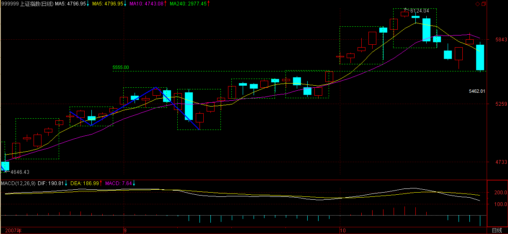
注意，这个反弹，在最恶劣的情况下，就是对跌破颈线后的反抽，目前颈线在5555点一带。这种最恶劣的走势，就是先跌到诸如5300点甚至5000点，然后一个反抽上不了5555点，然后确认顶部，然后继续大幅度下跌，这种走势，最终的调整目标，将在4000点，甚至更低。
当然，最好的走势，就是对颈线假跌破，然后反抽上来，这样，甚至有再冲6000点的可能，当然，这是最好的走势，能否出现，多头答应，空头不一定答应，即使空头答应，政策面可能也不一定答应。
本ID已经说过，反弹的操作，风险极大，如果你连第三类买卖点都分不清楚，那还是继续小板凳吧，这些反弹操作，你没资格参与。
虽然，本ID这一方已经全面大胜，但就像3600点大胜后，本ID要把后面的情况先说明一下。这次下来，为后面的低价股积聚了潜力，年底、明年的，又有不少好股票有好价位了，这才是这轮走势最大的用处。
节奏，有大节奏，也有小节奏。当然，首先必须有大思维、大节奏。这里的道道，自己漫漫体会吧。
先下，再见。
(2007-10-25 21:04:33)
今天本不想说股票，但在这个月圆之时如期地鬼哭狼嚎的，一幅浮世绘，所以，本ID一早说，不于股市自由，就谈不上自由，因为这是世界上的一大炼狱。别以为股市就是股市，这里，有着最多的贪嗔痴疑慢，确实是一个好的修炼场所。所以，所有在股市中被股市的，都是有福慧的。受其灾，消其灾，三生有幸。
对年末的走势，本ID早有总体的分析。在“2007年末，资金与政策博弈下的走势分析 2007-09-17 00:41:48”里，已经对走势给出最明确的分析，本ID后面的所有判断与行为，都在9月17日把剧本公布了，6100点，在这帖子里明确分析过了，但有多少人能留意？大概都被每天的波动所消磨掉了。
没有大的思路、大的节奏，为每天的波动所折磨，那是被股票面首，而不是面首股票。
请看那9月17日帖子其中的一段：“由于去年大盘涨幅是130.43%，收盘在2675.47点，按相应比例，6165点成为今年一个标杆式的点位。还有，深圳成分指数在96年的行情中，也如本次上海指数一样略微跌破1000点后展开，而前者最终在6100点上见大顶，因此6100点附近是后者行情一个特别值得留意的位置。”
还有最后结论性的一段：“反之，一旦资金面的肆虐超乎合理范围，那么大盘将演化为一种疯狂走势，即在今年内强行突破上面所说的6100点区域，这样，一次超530级别的调整将难以避免。”
该说的，其实早说了，大蓝图都没看明白，盯着每天的盘子有用吗？
那么，现在难道就是世界末日吗？
不是，中国经济和股市的未来依然美好。这里本ID反而要为各位打气，因为中国经济的基本面没有任何实质的改变，人民币升值也在加速中，一切利好的因素依然存在。
但是，正如本ID反复强调的，现在需要的是中级调整，为了中国股市的未来，这调整是必须的。
关于中国股市的最大蓝图，本ID在“神州自有中天日，万国衣冠舞九韶2007-03-19 08:52:42 ”有着最明确的描画。这帖子发出的当天，大盘就拉出长阳，突破3000点下的震荡，展开了今年波澜壮阔的走势。
当时，大盘还在3000点下风雨飘摇，本ID明确说了：“在总市值超越GDP之前谈论股市的泡沫是可笑的，在中国股市总市值超越其GDP之前，第一阶段行情不会结束。”
后来，这一切都实现了，而且，目前这一阶段的行情其实并没有结束，在中级调整后，这行情依然要展开，依然要新高，这是毫无疑问的。
但是，一个合理的调整去积聚新的能量，让市场走势更加稳健，使得20年大牛市的基础更加牢固，这是必须的。
就像在3600点，本ID站出来说要满江红，因为在中国的市场，散户太多，散户天生就是死多，所以那肯定受欢迎。
而这次，本ID站出来说要做空，而且又刚好在提前说的6100点上阻挡了疯牛，这当然不会招人待见，但，为了中国股市的未来，这必须这样干。
试想，如果中国股市也如台湾、日本式地醉生梦死一次，然后是十几、二十年的大熊市，最终害的是谁？
特别中国，经济的转型还没完全结束，一旦资本市场被毁，经济转型所需要的核心动力就彻底丧失，最终伤害实体经济，而后面就是所有人的生活。
对于本ID这种人，经济好坏都不会影响到个人的风花雪月、99419，但绝大多数的人，特别那些还有住房、医疗、教育等等问题需要解决的人，一旦经济出现问题，将是最大的受害者。
最大的利好，对于任何一个中国经济的关系者来说，就是经济的长期稳定的发展，而不是暴冷暴热。
我们需要的是长牛，而不是疯牛。
中国股市的牛市依然，中国股市的未来依然是世界上机会最多的，有着最远大的前途，必将成为世界上最大的市场。暴风雨，只是让它更健康，如果没有这样的大视野，那么，在市场上注定不可能成功。
中国股市充满机会，未来无限。而这机会、未来如何成为你自己，这才是对每个人最重要的问题。
这市场不怕做错了，只怕死不改错。好好反思一下自己的操作，大概上面这个问题，就能更好地找到正确的答案了。
(2007-10-26 15:13:40)
上几天来的香港人的头今天过来了，在工体北他们的总部等着，本ID只能快速说两句，抱歉了。
本ID已经把5555点这个位置告诉各位了，这是颈线位置，守住，那么还有机会来一波有力度的反弹，否则，形势就更恶劣了。
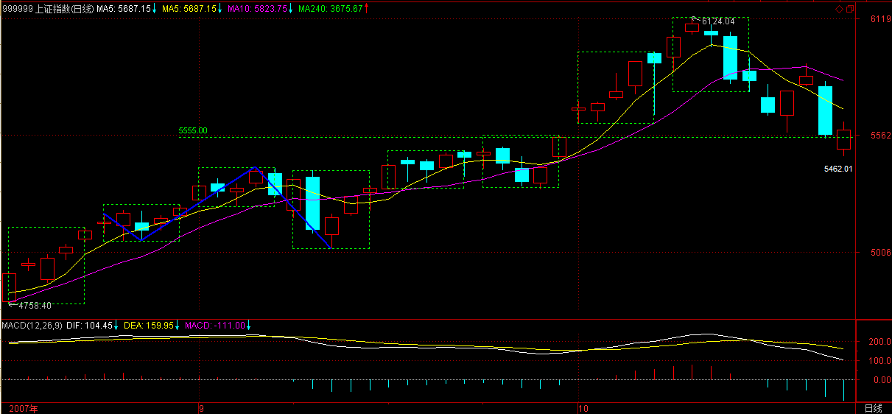
由于股指期货、中石油等的预期，所以中字头依然在反弹中继续扮演最重要的角色，而一些跌到重要均线位置的题材股，也会有一定的表现，但将趋于个股，板块效应不大。
当然，反弹是否能在5555点颈线酝酿成功，还要看周末消息面的情况，如果没有特别的消息，在资金解冻前后，这个反弹将出现并延续，而中石油的上市表现，将决定这个反弹的最终命运。【韶山映山红】以前打新，要冻结申购额度的钱在账户里。中国石油2007.11.05上市，募集资金668亿元，冻结打新资金3.3万亿元，刷新当时A股纪录。当时沪深两市的总市值大约是30亿元。缠师说的“资金解冻”就是这件事。】
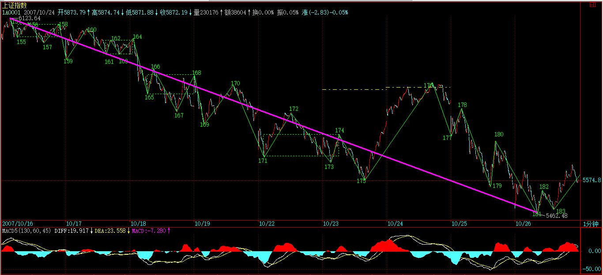
后面的游戏，关键是考技术，以及一看反弹不行就跑的灵活性，如果技术和灵活上都达不到要求，那就算了，这种活，一旦失手，痛但一定不会快乐着，除非你有受虐倾向。
好了，周末，让股票磨墙去。
先下，再见。
(2007-10-27 16:44:21)

虽然道理上，那地方不是随便可以住的，但其实，只要认识门道，确实可以很随便就入住，特别今天开那所谓衍生品大会的地方。那地方今天就这么把股指期货如此地随便了一下，难道就为了里面那些别的最高档酒店也没有的古董玩意？【韶山映山红】钓鱼台国宾馆。】
一些外国人或者外地来的，总是以能被带到那地方住为高规格的接待。其实，不妨揭密一下，那地方，如果认识门道，其价格比北京最好那几家酒店都要便宜点。当然，这里指的是标准的房间。而今天的衍生品在这个还算新装修的地方开，不知道是否有点上面那种希望住这种房子人的心态，说得难听点，就是土老冒心态。
土老冒心态，当然不一定是一般认为的土老冒才有。像现在，急着要被期货股指一下的心态，就与此类似。现在推出期货的时间根本就不合适，除非已经把股指期货当成一种住国宾馆显摆的玩意了。
住国宾馆的，特别那些做生意的去住的，往往不过是为了忽悠，真有实力是不用忽悠的。同样，没有股指期货，中国资本市场依然可以辉煌。
竟然有人在会上说，有了期货，就有了做空机制，就可以如何如何，股市就不会单边乱涨之类的玩意。说这话的人难道没经历过327？还有319难道不是一直单边乱涨最后导致国债期货停了？
本ID早把狠话说了，在目前的流通量环境下，期货推出后，主力做空的最后一定死得尸骨无存。连股票的卖空都没有，谈什么做空机制？想推出股指期货，先把流通量增大，卖空给搞了，否则，越期货越死人。
当然，本ID一点都不担心目前的状况，新官都没上任，更谈不上三把火，现在的，想说什么是什么，关键是说了算不算数。
如果目前的流通量与交易机制不变，那么，一旦在近期确认期货推出，本ID将成为最坚定的多头。当然，可能是先诱空再多。
汇丰都N百了，工行为什么不可以？把工行、中行干上200元，又有什么不可以的？
疯狂，谁不会？疯一把，一起死。早死早干净。
(2007-10-28 11:46:06)
“摸着石头过河”，已经成为一些无聊人的口头禅，甚至是为自身愚昧而导致无聊行为的托词。但这话，从来不是放之四海而皆准的真理，对于现在，还特别有害。
首先，需要摸着石头过河的，无非就是这样的人：1、光脚的，没鞋穿的。2、后面跟着追斩的，欠人钱的，或者准备给人抢去当压寨面首的。3、男猿人，没有架桥技术的。4、瞎眼的，不管过河不过河，有石头没石头，都要摸的。5、干了什么见不了人的事，给人扔下河的。6、孔男人类，一根筋思维见河，不管有石头没石头，都要去摸去过的。7、咸猪手，见石头形状的物体都企图摸，不管是否在河里。8、还有3680种，各位可继续列举下去。
其次，能被摸着石头过的河一定不是什么大河，不信，你去壶口那边摸一下看，那里肯定石头不少。还有，这河里一定要有石头，如果这河里净是沙子，或者，即使有石头也都给甩到岸边、埋到沙里，那么，即使有石头，也不可摸，或者要摸也只能在岸边，总之和过河是没多大关系的。
一句话，没有任何上帝规定过河一定要摸石头的。孙猴子可以翻个跟斗就过去，土行孙钻到地里就过去，摩西可以让水分开过去，当然也可以有人，拿一个神奇大馒头，扔到水里，一下把整个河的水吸干，馒头变神奇大蛋糕，唱着祝你生日快乐就过了河。
同样，世界上并不是所有的河都让你去摸着石头过的。有些河，怎么过都可以，就是不能摸着石头过。
还有，并不是什么时刻什么情况都需要摸着石头过河的。如果要过的是13亿人，凭什么要摸着石头过？难道摸着石头过就没有代价？
更重要的是，并不是任何河都需要过的。没有人是上帝，河里有没有石头还且说，关键是，凭什么让别人付出摸石头的代价去过河，谁又能保证河那边就是美丽新世界？谁又保证不会出现这种情况：你带着的橘子到了河那里就永远不能再橘子了，你就要吃又苦又社涩的枳子。
任何忽悠要摸着石头过河的，一个前提都是必须先画一个饼，把河那边的世界口吐莲花地美丽一番。但，能摸着过的河一定不是什么大河，甚至就是一条臭水沟，那边的美丽是一种什么玩意，难道没眼看吗？是不是，就因为没有眼，所以才要摸？
没有眼的，才需要摸。关于摸，一个最重要的词语，是“盲人摸像”。
摸，摸摸石头可以；而洞穿整个世界的，是眼睛和心脑。
摸，对应的只是人的一种低等功能。光能摸的，不是人，最多只能算是猿人。
我们不需要摸着什么石头过什么河，我们可以过世界上任何的河，前提是，我们的眼睛告诉我们，河那边确实是美丽新世界。眼睛不够，我们还有望远镜，不行，还可以是天文的，连银河都给看穿了。
我们早不是光着脚的，我们穿得花枝招展的，我们就算过河，也要香车宝马地跨过河上那道彩虹，谁爱摸石头谁摸去，堂堂中国，就要有堂堂的气派。我们已经是崛起中的大国，我们需要的是洞穿一切的战略，我们需要的是用我们自己的战略去创造一个新的世界。
世界是我们创造的，我们需要河在哪里就改到哪里；世界在我们脚下，世界在堂堂中国的脚下。
(2007-10-29 15:25:18)
5555点站稳后反弹，这都在预计之中早说了，
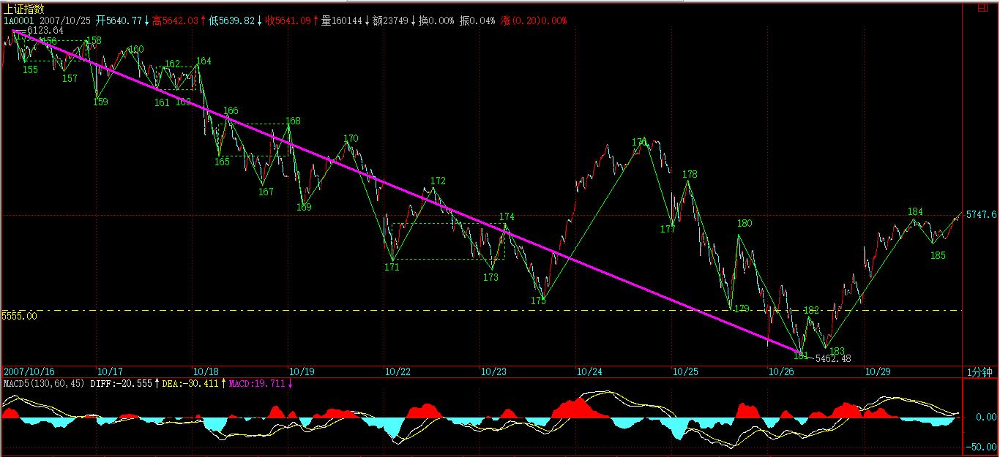
明天面临下降通道上轨压力，这是技术的话，
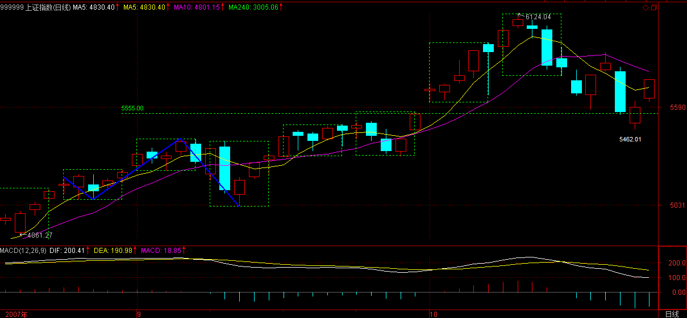
基本面上，如果指数期货出来，点位根本没意义，特别在形成多空对赌的局面时，那时候，只需要关于如何把对方打爆了，什么点位不点位的，如果夹到100000点才能把空头夹死，那当然也是可以这样操作的。
期货，从来都是你死我活的斗争，没有什么仁慈可说的。拥有相应的筹码，就是拥有市场的发言权，有发言权比什么都重要。
明天一旦冲破上轨压力，反弹的空间将被彻底打开。当然，这个位置出现反复也是很自然的。由于大面积资金被冻，所以没什么消息的情况下，这反弹是不会轻易结束的。
如果期货在年内推出，那么6100点当然不会是什么位置了，这是目前大盘最大的变数。但无论走势到什么位置，其实和大多数人无关，因为真正上涨的股票基本依然是带指数的，其他股票，大多数只能暂时继续反弹然后回跌，最多保持盘整的走势，没什么大戏。
不过短线，超跌股票的反弹还是有一定机会的，但风险同样大。至于中字头，有期货这保护伞，当然是爱多疯有多疯。
期货出来后，个股分化将继续加剧，散户的生存空间进一步减少，事情就是这样了，天要下雨，自己找伞吧。
(2007-10-29 22:42:32)
二十四
“要打大仗了。”
“小菜，不过这孙子的股权迷宫设计得还有点水平。”
“有水平也没用，都在里面待着了。【韶山映山红】唐家兄弟。】
“他不到到里面待着，这大苹果哪会这么鲜红，惹来这么多狂蜂浪蝶。”【韶山映山红】缠师很多次的提到苹果，是什么意思？★】
“为他人做嫁衣裳。”
“现在还很难说这衣裳给谁的，千科、千通、珠河、单天都在折腾着。战白和短虚更好玩，自家打起来了。不过有咱，他们都没戏。”
“是的，不过也够悬。”
“确实，里面麻烦事不少。这世界真疯狂，有钱买东西还这么费劲，真没劲。”
“有钱的主太多，没办法。”
“都是这人民币升值给闹的，这样搞，等于都在往一列飞速奔驰的车上跳，不上去是死，因为财产大缩水；上去也是死，因为最终刹不住，肯定是车毁人亡。”
“没那么恐怖吧，日本熬了十几年，垂而不死，也没多大事。”
“中国和日本是一回事吗？日本多少人，中国多少人？平均生活水平相差多少？社会保障水平相差多少？”
“中国人三年自然灾害都可以野火吹又生，没多大事。”
“你脑子水多啦，回到那时候，估计你一天都熬不住。”
“哈哈，俺吃苦耐劳。”
“天生犯贱，明明可以吃糖，你一定要吃烫，受虐狂。”
“哈哈，不说了，说不过你。”
“说正经的，那事可要盯着。那几家傻蛋，不明白事，线路都没搞清楚，就往迷宫跑，肯定没戏。不过这么多大象乱窜，踩点花花草草的，咱也要留点神。”
“明白，这样的东西，买少见少，绝版货，也怪不得人家盯得紧。”
“战白说想收个国内的玩意，好装他们现在国内的资产。要不把该拿的拿了，包袱皮就批发给他们。”
“这可不好搞，这家伙目标大，搞不好搞出点什么来，不好收场。”
“也是，让他们自生自灭吧。”
“这股指期货看来是非出来不可了。”
“也不一定，现在都不是能拍板的人在瞎忽悠，像那创业板，折腾N年，现在还没修成正果。反正没有最后公告，都不算数，就当一个忽悠的题材，先瞎折腾折腾，就这点破事，一样的夜晚、一样的月光，一样的晚安，洗洗睡吧。“
“好的，挂了。”
窗外，月如刀。
(2007-10-30 15:26:44)
昨天说了，突破下降通道上轨后，反弹空间打开。今天走势极端规范，下午那次跳水，就是对上轨突破后的回抽，这些最基本的技术语言，如果都看不明白，就必须补课了。
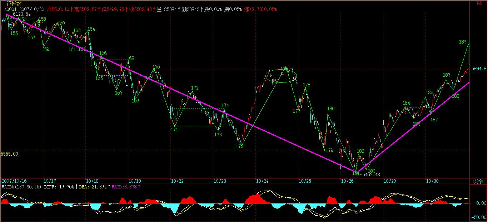
站在本ID理论的角度，今天早上的绿盘与昨天的尾盘，刚好构成1分钟中枢，而下午的跳水，刚好构成该中枢的第三类买点。【韶山映山红】缠师这个地方标号乱了，偏偏缺这段时间的原图，无从对比。将错就错吧。】也就是说，下午的跳水，有两重的技术含义。【韶山映山红】两重的技术含义：突破下降通道上轨后的回抽；1分钟中枢的第三类买点。】
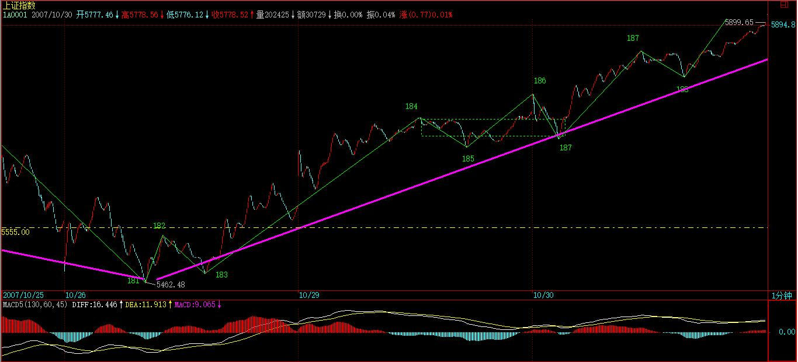
现在的走势十分简单，只要不出现回到这1分钟中枢，而在上面形成新的中枢，那这反弹的级别就至少不小于1分钟的上涨。这样，操作就极为简单，耐心等待背弛出现就可以。
短线总体的节奏，本ID在上周五“5555点守住，反弹酝酿ing 2007-10-26 15:13:40”已经说得很明确了，就是5555颈线站稳后，反弹至少延续到中石油资金解冻前后。就算是最坏的情况，也要先把这些资金骗进来再说，否则太对不住这3万亿资金的热情。【韶山映山红】以前打新，要冻结申购额度的钱在账户里。中国石油2007.11.05上市，募集资金668亿元，冻结打新资金3.3万亿元，刷新当时A股纪录。当时沪深两市的总市值大约是30亿元。缠师说的“资金解冻”就是这件事。】
中期走势，本ID已经说得很清楚，如果期货出来，那点位就没什么意义了，6100点也不是大不了的位置，那时候只有疯狂，没什么点位不点位的。而如果期货被阻击出不来，那么，6100点当然还是一个位置，这次的反弹，也就是构成顶部图形的第二个尖。至于这个尖，比前面一个高点还是低点，都问题不大，例如双头，可能就低点；头肩顶，就高点，这都没有太大的影响。【韶山映山红】反正都是构造顶部。】
无论什么顶部的最终图形，5555点都是生命线，只要不有效跌破，这图形就没完，而且有变成中继图形的潜力。否则，就是顶部图形成立，中级调整确立。而目前，唯一的变数就是期货的时间。
关于期货，本ID也说得很清楚了，本ID不愿意见到出来，特别是现在。因为这样将会耗尽中国资本市场的那点能量，然后的调整就不是小儿科了。现在，这事的折腾，依然不能说完全定局。有些事，最后一晚还可以改变，没到最后一下，市场外的努力是不会放弃的。
至于现在瞎忽悠的，又不是能拍板的人，本ID连看都不爱看他们的废话。
当然，现在舆论在造势，有一群势力在为自己的利益忽悠着，这事情，就看最后一下的智慧了，但本ID这里放一句狠话：请别像327、319那样，谁拍板、谁负责，这个政治、经济责任，不可能拍拍脑袋就没事。
另外，本ID还要说：所有忽悠这事的，请先说明白，出事了，你们负责吗？如果由此把资本市场和经济搞砸了，你们负责吗？不负责，为了名利而忽悠，这不是中国人该干的事情。
现在，站在本ID的立场，很简单，就是该反弹就反弹，该疯狂就疯狂，在5555跌破之前，进行大幅度的震荡操作去吸血。而在市场之外，该有的努力一定不会少，最终的结果如何，只要心到了、力到了，本ID也无怨无悔了。
但相信，管理层对目前点位风险会有足够的认识，一旦市场进入不可自我调节的状态，管理层一定不会袖手旁观。
好了，最近确实事多，明天要出差，还有很多事要忙，先下，再见。
本课目录
教你炒股票86：走势分析中必须杜绝一根筋思维终于再次强调宏观调控，中国希望大大的。中国经济和股市的未来依然美好5555点守住，反弹酝酿ing今天不得不破例说股票摸着石头过河辨明天面临下降通道上轨压力那一夜，他的体液喷了我一身（二十四）突破上轨，反弹空间如期打开。